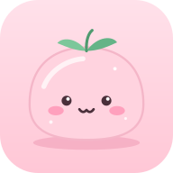

Informativa privacy
In breve
Mochi serve solo a ricordarti le tue cose. Gli altri utenti non possono vedere i tuoi dati, che non vengono venduti, condivisi, usati per pubblicità o analizzati. Puoi scaricarli o cancellarli quando vuoi dall'app.
Chi può accedere ai dati
Nessun altro utente. Chi gestisce l'app, in quanto amministratore del database, ha un accesso tecnico necessario per la manutenzione: non lo usa per leggere i contenuti. I dati non sono cifrati con una chiave personale, quindi non scrivere nell'app password, dati bancari o informazioni sanitarie.
Chi gestisce i dati
Titolare del trattamento: il gestore dell'app.
Contatto: tramite il gestore dell'app.
Quali dati
- Account: email, nome scelto da te, password (salvata in forma cifrata, nessuno può leggerla).
- Contenuti: cose da fare, appuntamenti e appunti che scrivi tu, con le eventuali liste da spuntare al loro interno.
- Notifiche: se le attivi, un identificativo tecnico del dispositivo per inviarti i promemoria.
- Com'è andata la giornata: se la usi, l'umore che scegli per ogni giorno e l'eventuale nota. Nessun altro utente li vede.
- Turni di lavoro: se li usi, i tipi di turno con i loro orari, il ciclo e i turni che segni giorno per giorno. Nessun altro utente li vede.
- Spese: se le usi, l'importo, la categoria, il giorno e l'eventuale nota di ogni spesa, più il budget mensile se lo imposti. Sono solo tue: nessun altro utente le vede, nemmeno nelle liste condivise.
- Giorni attivi: se usi la serie di giorni, le date in cui hai completato qualcosa (solo il giorno, senza titoli né orari), per contare la serie e il record. Restano anche se poi elimini la voce. Nessun altro utente li vede.
- Preferenze: nome dell'app, mascotte, colori, stile, carattere, cosa vuoi usare, stagioni e suoni, la casetta scelta con i suoi mobili, i ricordi delle feste e, se vuoi, il giorno e il mese del tuo compleanno (senza anno) e, se li scegli, i tuoi pronomi (servono solo ad adattare i testi dell'app a te, non sono condivisi con altre persone), salvati nel tuo account per ritrovarli su tutti i tuoi dispositivi.
- Liste condivise: se entri in una lista condivisa, le altre persone della lista vedono il tuo nome e tutto quello che metti nella lista (non la tua email né le tue altre voci). Se elimini l'account, le voci che hai messo nelle liste condivise restano alle altre persone.
- Messaggi alla sviluppatrice: se usi "Consiglia alla sviluppatrice", il testo che scrivi e il tipo di dispositivo (es. iPhone o Mac). Chi gestisce l'app li legge insieme al tuo nome e alla tua email e può risponderti dentro l'app. Messaggi e risposte vengono cancellati con il tuo account.
- Come ospite (senza account): tutto quello che scrivi resta solo su questo dispositivo e non arriva al server. Non serve accettare niente. Se poi crei un account o entri, puoi scegliere di portare le tue cose nell'account: da quel momento valgono le regole di questa pagina.
- Consenso: quando crei un account salviamo la versione dell'informativa che hai accettato e la data, insieme al tuo account.
- Sul tuo dispositivo: una copia dei tuoi dati (voci, spese, turni...) e le preferenze (es. il tema), per far funzionare l'app anche offline. Le sessioni di Concentrazione (la serra) restano solo sul dispositivo e non vengono inviate a nessuno. Nessun cookie di tracciamento.
Perché e su quale base
Solo per fornirti il servizio che chiedi: salvare le tue voci, sincronizzarle tra i tuoi dispositivi e mandarti i promemoria. Base giuridica: esecuzione del servizio richiesto (art. 6.1.b GDPR).
Dove sono conservati
Su Supabase (database e autenticazione), su server nell'Unione Europea. L'app è pubblicata su GitHub Pages, che ospita solo il codice e non riceve i tuoi dati. Le notifiche passano dai servizi push di Apple, Google o del tuo browser, che ricevono solo il testo del promemoria.
Per quanto tempo
Finché hai un account. Se lo elimini, account e contenuti vengono cancellati subito e per sempre.
I tuoi diritti
- Accesso e portabilità: Impostazioni → Backup → Scarica.
- Rettifica: modifichi tutto direttamente nell'app.
- Cancellazione: Impostazioni → Elimina account.
- Per ogni altra richiesta scrivi al contatto indicato sopra. Puoi anche presentare reclamo al Garante per la protezione dei dati personali.
Ultimo aggiornamento: novembre 2026 · Torna all'app